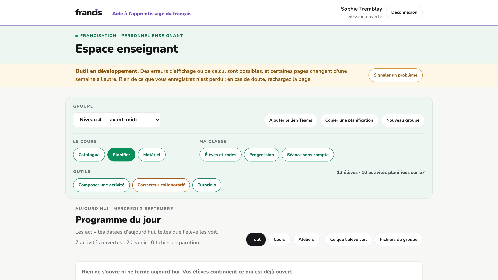
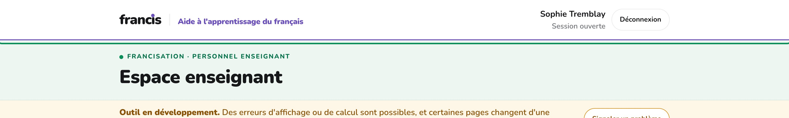
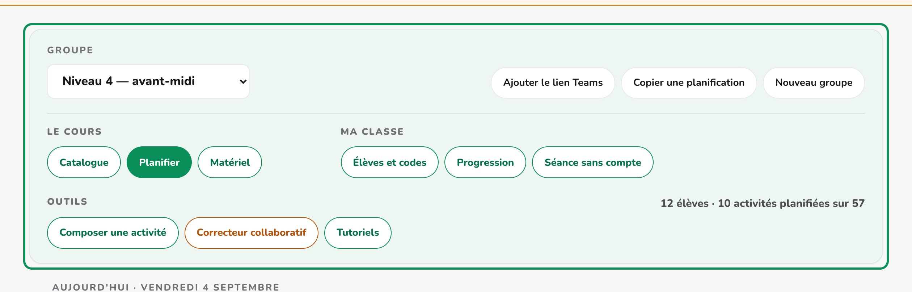
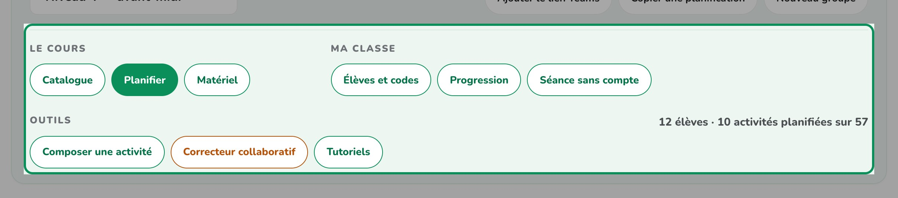
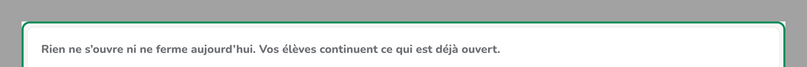
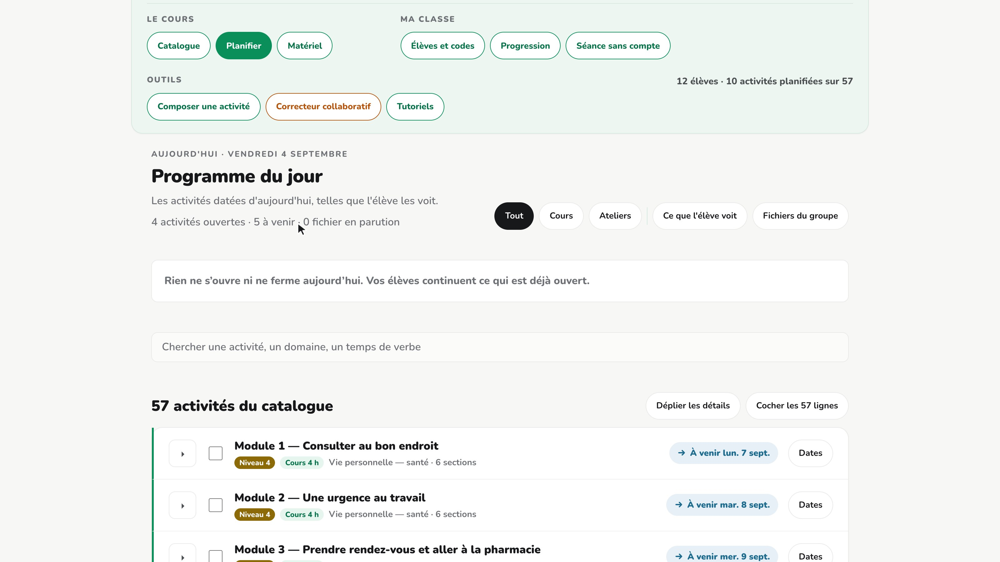

Guide des tutoriels — 1 · Le portail en un coup d'œil
Capsule 1 · Le portail en un coup d'œil, environ 1 min 23. Une ligne par plan : le texte exact que dira la voix, les copies d'écran de ce qu'on verra pendant qu'elle le dit, et la durée. À relire et à corriger avant qu'on synthétise et qu'on enregistre.
Guide du 2 septembre 2026
Les durées sont estimées. 2,71 mots à la seconde, relevés sur les 54 narrations déjà produites, plus 0,7 s de respiration. Synthétiser pour les connaître exactement engagerait la dépense qu'on veut éviter avant validation — et la synthèse HD n'est pas déterministe : deux tirages du même texte ne durent pas pareil.
Les copies d'écran sont réelles. Elles viennent du portail de démonstration, en rejouant les gestes du manifeste par la même fonction que le tournage. Quand un plan surligne un élément, l'image est rognée dessus ; quand l'écran bouge pendant le plan, il y a plusieurs images ; quand il ne bouge pas, une seule.
1Le portail en un coup d'œil
6 plans · environ 1 min 23
| Plan | Ce que la voix dit | Ce qu'on voit | Durée |
|---|---|---|---|
| a | Bienvenue dans l'espace enseignant de francis. En quelques minutes, nous allons faire le tour de vos outils : ouvrir un groupe, donner des dates à vos activités, suivre vos élèves et sortir le matériel de la semaine. Dit à la voix : « Bienvenue dans l'espace enseignant de franciss. En quelques minutes, nous allons faire le tour de vos outils : ouvrir un groupe, donner des dates à vos activités, suivre vos élèves et sortir le matériel de la semaine. » |  | 14 s |
| b | Tout tient dans une seule page. En haut, une bande blanche : le nom de la plateforme, et à droite votre session, qui reste ouverte trente jours sur cet appareil. |   | 11 s |
| c | Juste en dessous, votre groupe. C'est la première chose à choisir, et tout le reste en découle : le niveau du groupe décide de ce que vous verrez du catalogue et du matériel. Changez de groupe, et vous changez de classe. |   | 16 s |
| d | Sous le groupe, neuf boutons rangés en trois familles. Le cours : le catalogue, la planification, le matériel. Ma classe : les élèves et leurs codes, la progression, la séance sans compte. Et les outils, qui s'ouvrent chacun dans un nouvel onglet. |   | 16 s |
| e | Au bout de la ligne, un résumé dit où vous en êtes : combien d'élèves, combien d'activités déjà planifiées. Et dessous, le programme du jour — ce qui est ouvert, ce qui ferme bientôt. C'est le coup d'œil du matin, avant d'entrer en classe. |   | 17 s |
| fin | Voilà, c'est terminé pour cette capsule. Vous connaissez maintenant les grandes pièces du portail : le groupe, les neuf boutons, et le programme du jour. |  | 10 s |